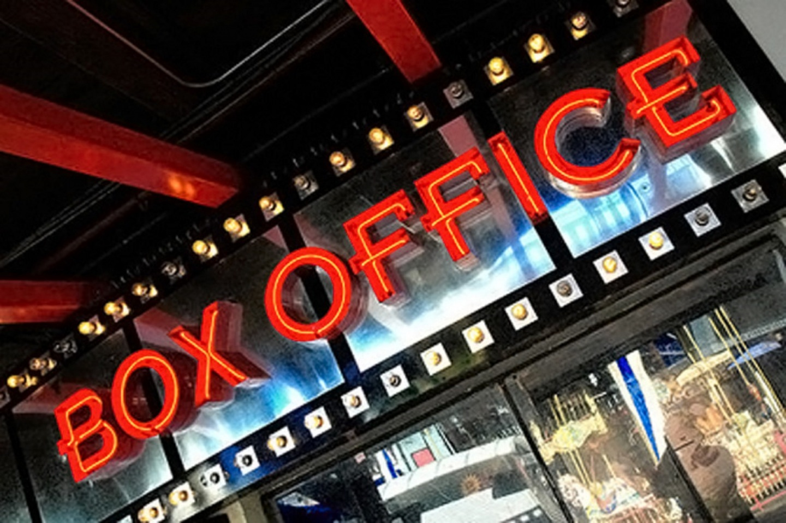

COGS187A Final Project, Part 1
By: Dominic Fong, Jingchun Zhou, James Walrath
Toggle navigation
Group 6
casual
hardcore
vocational
similar sites
task division

Welcome! We are group 6, working on an independent movie theater website.
Our user groups are defined as
casual movie viewers
who only goes to a movie theater once a while,
hardcore movie lovers
who made the movie theater their second home, and
vocational related persons
including job seekers and current employees of the movie theater.
We have conducted interviews, provided personal thoughts and scenarios for each of the user group, as well as
6 similar sites
and a complete
task division list
.
Please seat back and enjoy the show!